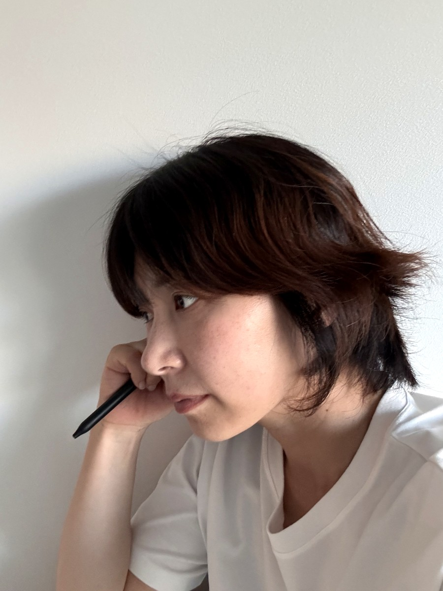

나에 대해

안녕하세요, 서온입니다.
결이 닿는 대로
현장에서 여러 매장을 관리하는 일을 하고 있어요.
매일 아침 문을 열기 전, 60초 동안 오늘의 온도를 확인하고,
퇴근 후엔 그 온도를 이야기로 남깁니다.
20년을 일했는데, 매년 처음 보는 것들이 생겨요.
그래서 계속 기록하게 되는 것 같아요.
이미 닿은 결도 있고,
아직 찾아가는 중인 결도 있어요.
어떤 형태로 닿을지는 모르지만 —
닿는 곳이 생기면, 이곳에 하나씩 남길 거예요.
흘러가다 보면, 거기에도 닿을 것 같아요.